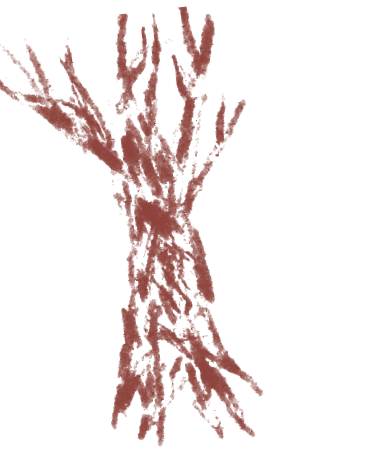
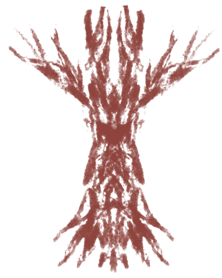
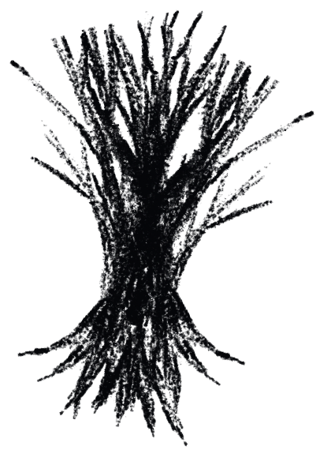
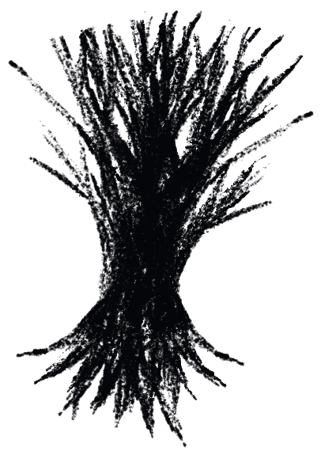

Projet scrollytelling créé dans le cadre du cours Optimisation Web - Intégration multimédia - Collège Montmorency.
© 2024 - Conception : Jérémy Roy-Côté et Keven Malric | Développement Web : Jérémy Roy-Côté.
Défiler